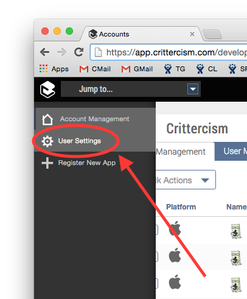
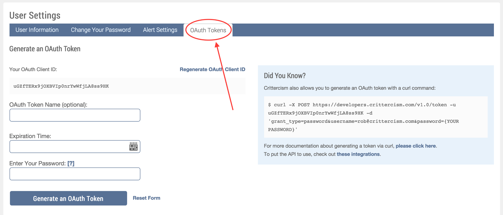
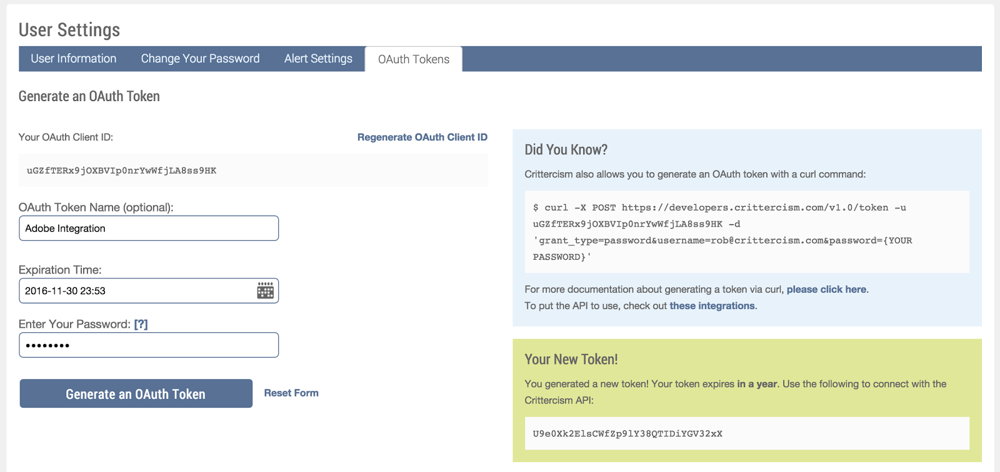

This topic describes how to integrate Workspace ONE Intelligence with Adobe Analytics. Adobe Marketing Cloud is a complete set of marketing solutions that give enterprises everything they need to get deep insight into their customers, build personalized campaigns and manage their content and assets.
Integrating Workspace ONE Intelligence data with Adobe helps customer have a single view of performance metrics in their Adobe Analytics interface.
This document will guide you through the process of activating Workspace ONE Intelligence Data Connector in Adobe Analytics including steps to acquire various credentials from your Workspace ONE Intelligence account.
Before you start the integration process, please make sure you have the following:
Current subscription of Adobe Analytics and Mobile Analytics
Admin access to Adobe Analytics
Current enterprise subscription to Workspace ONE Intelligence
Implemented Workspace ONE Intelligence solution in your mobile application
The implementation consists of two parts:
Generating your Workspace ONE Intelligence App ID and Token
Activating the Adobe Data Connector
Get your Workspace ONE Intelligence API Token from the Workspace ONE Intelligence portal:
Log into Workspace ONE Intelligence at: https://app.crittercism.com/developers/login
Note: Make sure the app(s) that you want to pass data to Adobe from Workspace ONE Intelligence appear in your account.
Go to the user settings page by clicking on “User Settings” in the left sidebar or go to: https://app.crittercism.com/developers/user-settings.
Click on the “OAuth Tokens” Tab.
Fill out the form to generate your token:
Enter in a Name for the token, i.e. “Adobe Integration”
Choose a long expiration time for the token, we recommend 1 year
Enter in your Workspace ONE Intelligence password
Click “Generate an OAuth Token”
You should now see a newly generated OAuth Token. Copy that token and save it somewhere.
Activate the Workspace ONE Intelligence Data Connector in Adobe:
Login to your Adobe Analytics Account and navigate to the Data Connector.
In the Data Connector screen, click on “Add Integration” and sort the list of integrations by Name. From the list, drag and drop the Workspace ONE Intelligence widget to the Adobe Marketing Cloud.
You will see an integration wizard popup with instructions and the Terms & Conditions. Check the box to accept and click “Create and Configure This Integration.”
Choose the report suite where you want to integrate Workspace ONE Intelligence data. Each app integrated with Workspace ONE Intelligence will require its own integration to be activated in Adobe Analytics. You may activate a Data Connector in your Android app and iOS app report suite each (recommended), or you can activate multiple Data Connectors for each app in your Global Report Suite.
Choose a name to the integration so that you can remember which report suite and Workspace ONE Intelligence app you are integration.
For Workspace ONE Intelligence to send correct data to your selected report suite, you need to provide the Workspace ONE Intelligence App ID and Workspace ONE Intelligence OAuth Token which you retrieved earlier.
That’s it! Review the values that you have entered and hit “Activate”. This integration will create the classifications and calculated metrics required for this integration automatically. To complete the integration, click on “Activate.”
For additional assistance, contact Apteligent Support (support@apteligent.com).